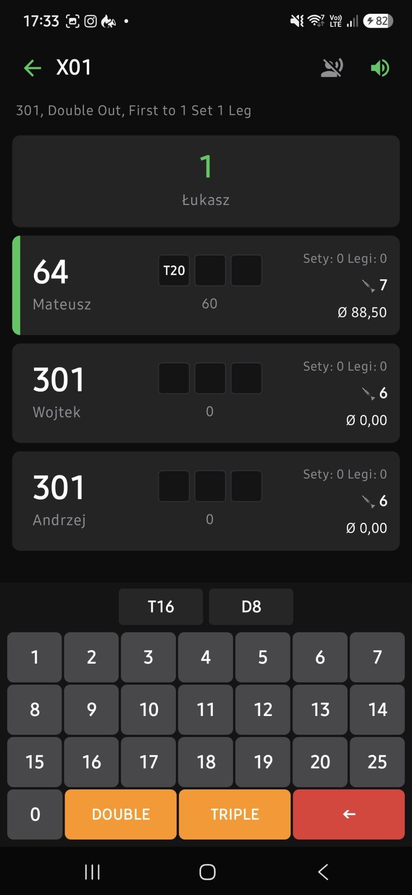

180
Inteligentne Checkouty (2–170)
Aplikacja automatycznie przelicza i podpowiada optymalne ścieżki zakończenia legów, preferując ulubione podwójne: D16, D20 czy D8. Koniec z zastanawianiem się, co rzucić po 82 czy 121.
Zaprojektowany do wspólnej gry ze znajomymi w pubie lub w domu. Błyskawiczne wprowadzanie punktów, gotowe podpowiedzi checkoutów na podwójne, bot treningowy i Twoje własne okrzyki dźwiękowe.

Bez zbędnych wodotrysków, bez rejestracji kont, bez zbierania danych. Prosto, szybko i czytelnie z odległości 2.37 metra.
Aplikacja automatycznie przelicza i podpowiada optymalne ścieżki zakończenia legów, preferując ulubione podwójne: D16, D20 czy D8. Koniec z zastanawianiem się, co rzucić po 82 czy 121.
Możesz podpiąć dowolny plik MP3 lub WAV pod dowolny wynik (np. Twój własny okrzyk na 180 albo śmiech na pudło). Całą paczkę dźwięków wyeksportujesz jednym klikiem do pliku .zip i wyślesz znajomym!
Nie masz z kim rzucać? Zmierz się z wirtualnym botem na różnych poziomach trudności (od początkującego po bezlitosnego mistrza darta). Idealne do codziennego treningu.
Pełne wsparcie dla kultowego trybu Cricket (sektory 15–20 + Bull), także w bezwzględnym wariancie Cut-Throat z naliczaniem punktów przeciwnikom.
Średnia 3 lotek, First 9, procent trafionych checkoutów, historia meczy z opcją pauzowania i wznawiania gry w dowolnym momencie. Pełny eksport bazy do pliku JSON.
Aplikacja posiada wbudowany moduł aktualizacji. Gdy wyjdzie nowa wersja, sprawdzasz ją w Ustawieniach i aktualizujesz jednym kliknięciem – bez ponownego szukania plików.
Kliknij zielony przycisk „Pobierz na telefon” na samej górze tej strony. Przeglądarka (Chrome, Samsung itp.) zapisze plik w pamięci telefonu.
Gdy telefon zapyta: „Czy chcesz zainstalować aplikację z nieznanego źródła?”, wejdź w Ustawienia i włącz suwak przy Twojej przeglądarce. To standardowy wymóg Androida dla plików spoza Google Play.
Potwierdź instalację. Aplikacja pojawi się w menu telefonu. Co ważne: kolejne aktualizacje pobierasz już bezpośrednio w samej aplikacji!